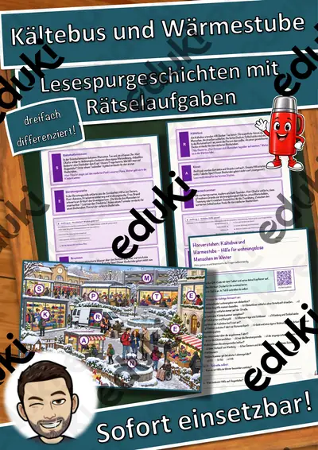
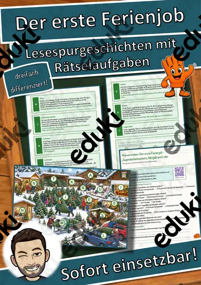
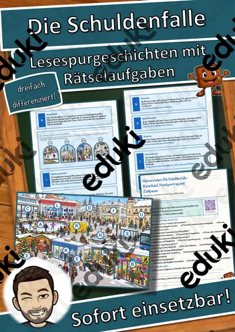
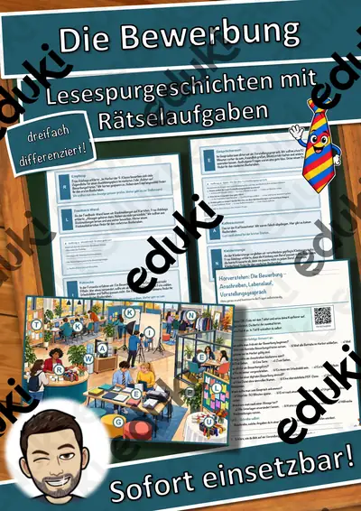
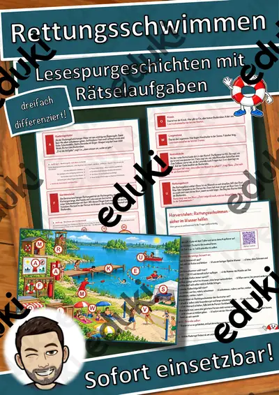
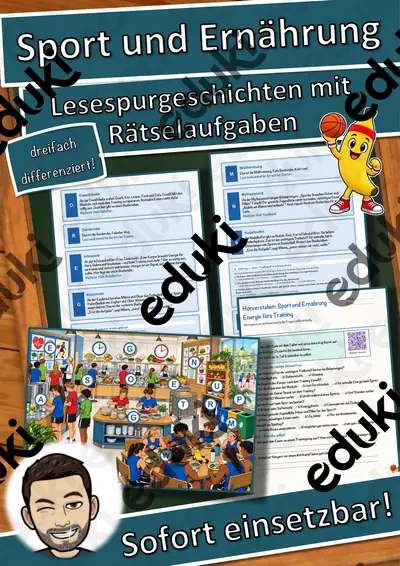

Lesespur: Inside the Bunsen Burner – Lesespurgeschichte mit Rätseln auf Englisch (Klasse 9)

Materialpaket Winter für die 9. Klasse: 5 Lesespurgeschichten mit Rätselaufgaben fächerübergreifend (Hungerwinter 1947, Permafrost, Christbaummarkt & mehr)

Lesespur: Die Wärmedämmung: wo das Haus Wärme verliert – Lesespurgeschichte mit Rätseln (Klasse 9)

Lesespur: Die Novemberrevolution 1918: vom Kaiserreich zur Demokratie – Lesespurgeschichte mit Rätseln (Klasse 9)

Lesespur: Richtig lüften im Winter: Luftfeuchtigkeit, Taupunkt und Schimmel – Lesespurgeschichte mit Rätseln (Klasse 9)

Lesespur: Inside an Apple Tree – Lesespurgeschichte mit Rätseln auf Englisch (Klasse 9)

Lesespur: Der Equal Pay Day: warum Frauen weniger verdienen – Lesespurgeschichte mit Rätseln (Klasse 9)

Lesespur: Der Hungerwinter 1947: Leben nach dem Krieg – Lesespurgeschichte mit Rätseln (Klasse 9)

Lesespur: Kältebus und Wärmestube: Hilfe für wohnungslose Menschen im Winter – Lesespurgeschichte mit Rätseln (Klasse 9)

Lesespur: Der erste Ferienjob: Jugendarbeitsschutz, Minijob und Lohn – Lesespurgeschichte mit Rätseln (Klasse 9)

Lesespur: Die Schuldenfalle: Ratenkauf, Handyvertrag und Zahlpause – Lesespurgeschichte mit Rätseln (Klasse 9)

Lesespur: Der Mietvertrag: die erste eigene Wohnung – Lesespurgeschichte mit Rätseln (Klasse 9)

Lesespur: Der Ausbildungsvertrag: Probezeit, Urlaub, Rechte und Pflichten – Lesespurgeschichte mit Rätseln (Klasse 9)

Quali Mathematik Teil A – rechnen ohne Taschenrechner – Lesespurgeschichte mit Prüfungsaufgaben (Klasse 9)

Lesespur: Der Erste Weltkrieg: vom Kriegsbeginn zum Waffenstillstand – Lesespurgeschichte mit Rätseln (Klasse 9)

Lesespur: Abschied und Trauer: wie Menschen ihrer Toten gedenken – Lesespurgeschichte mit Rätseln (Klasse 9)

Lesespur: Die Bewerbung: Anschreiben, Lebenslauf, Vorstellungsgespräch – Lesespurgeschichte mit Rätseln (Klasse 9)

Lesespur: Markt und Preis: Angebot und Nachfrage am Christbaummarkt – Lesespurgeschichte mit Rätseln (Klasse 9)

Lesespur: Roboter in der Fabrik: Automatisierung und Arbeit – Lesespurgeschichte mit Rätseln (Klasse 9)

Lesespur: Die Cloud: Daten im Rechenzentrum – Lesespurgeschichte mit Rätseln (Klasse 9)

Lesespur: Phishing und Betrug im Netz erkennen – Lesespurgeschichte mit Rätseln (Klasse 9)

Lesespur: Verschlüsselung: vom Caesar-Code zum Schloss im Browser – Lesespurgeschichte mit Rätseln (Klasse 9)

Lesespur: Tabellenkalkulation: Zellen, Formeln, Diagramme – Lesespurgeschichte mit Rätseln (Klasse 9)

Lesespur: Künstliche Intelligenz: wie Maschinen aus Beispielen lernen – Lesespurgeschichte mit Rätseln (Klasse 9)

Lesespur: Rettungsschwimmen: sicher im Wasser helfen – Lesespurgeschichte mit Rätseln (Klasse 9)

Lesespur: Sport und Umwelt: Natursport ohne Spuren – Lesespurgeschichte mit Rätseln (Klasse 9)

Lesespur: Sport und Ernährung: Energie fürs Training – Lesespurgeschichte mit Rätseln (Klasse 9)

Lesespur: Fitness und Krafttraining: richtig trainieren – Lesespurgeschichte mit Rätseln (Klasse 9)

Lesespur: Wettkampf und Nervosität: mit Druck umgehen – Lesespurgeschichte mit Rätseln (Klasse 9)

Lesespur: Musikvideos: wie Bild und Klang zusammenwirken – Lesespurgeschichte mit Rätseln (Klasse 9)
Keine Materialien gefunden – versuch einen anderen Suchbegriff oder Filter.
Vorbereitung auf das Leben danach
In Klasse 9 rückt das, was nach der Schule kommt, in den Fokus. Bewerbungen, Verträge, Rechte und Pflichten gehören ebenso zum Programm wie Prüfungen. Dieses Angebot ist darauf abgestimmt.
Beruf und Wirtschaft
Deutsch bietet „Die Bewerbung“, „Der Ausbildungsvertrag“, „Der erste Ferienjob“ und „Kältebus und Wärmestube“. Wirtschaft ergänzt „Die Schuldenfalle“, „Der Mietvertrag“, „Markt und Preis“ und „Die soziale Marktwirtschaft“. Arbeitslehre liefert Berufssteckbriefe und „Meine erste eigene Wohnung“.
Politik und Gesellschaft
Politik: „Der Equal Pay Day“, „Der Rechtsstaat“, „Der Föderalismus“, „Die Vereinten Nationen“ und „Die Europäische Union“. Ethik greift „Abschied und Trauer“ und „Arbeit und Leistung“ auf.
Mathematik und Naturwissenschaften
Mathematik bereitet mit „Quali Mathematik Teil A“, „Prisma und Zylinder“, „Quadratische Funktionen“ und „Potenzen und Wurzeln“ vor. Chemie: „Der Rost“, „Die Raffinerie“, „Die Seife“. Physik: „Die Wärmedämmung“, „Der Dynamo“, „Die Röntgenröhre“. Biologie: „Die DNA“ und „Der Zellkern“. Kunst: „Pop Art“ und „Künstlerinnen“.
Praxisnah arbeiten
Jugendliche in Klasse 9 fragen oft, wofür sie etwas brauchen. Viele Materialien beantworten das, weil sie von realen Situationen ausgehen: einer Bewerbung, einem Vertrag, einer Wahl. Daneben stehen Fachblätter in Mathematik und Naturwissenschaften, die auf Prüfungen vorbereiten. So kannst du Unterricht abwechslungsreich planen, ohne den Prüfungsdruck zu vergessen. Die Lösungen liegen jeweils bei, und die Fachfilter führen dich schnell zum passenden Titel.
Das Angebot ist deutlich kleiner als in den Jahrgängen davor, dafür sind die Themen gezielter gewählt. Wenn du ein bestimmtes Thema vermisst, probiere die Suche, denn sie durchsucht auch die Titel, die auf dieser Seite nicht einzeln genannt werden.
Zeit sparen bei der Vorbereitung
Alles ist druckfertig. Du lädst das Blatt herunter, kopierst es und hast zugleich die Lösung zum Kontrollieren.
Häufige Fragen
Gibt es Material für die Qualifikationsprüfung?
Ja, etwa „Quali Mathematik Teil A“.
Sind Wirtschaftsthemen alltagsnah?
Ja, sie gehen von Miete, Schulden und Verträgen aus.
Gibt es Politikmaterial zur Europäischen Union?
Ja, als Lesespur in Klasse 9.
Kann ich Lesespuren als Prüfungsvorbereitung nutzen?
Gut zur Wiederholung. Gezielte Trainings gibt es in den Prüfungstraining-Reihen.